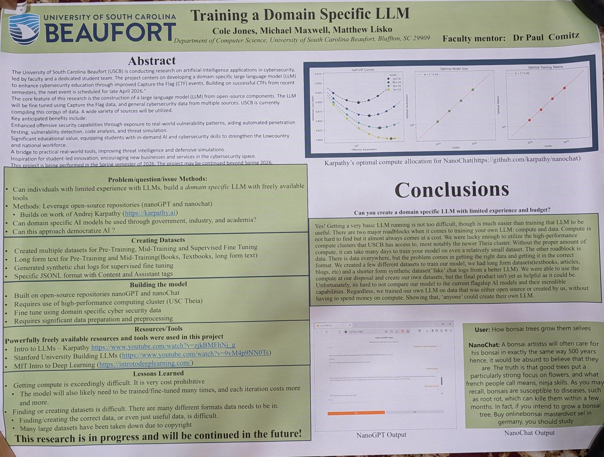

This is a research project at the University of South Carolina Beaufort focused on training a domain-specific large language model (LLM) for cybersecurity — specifically, a model to help create Capture the Flag (CTF) events. I presented it as part of a team at USCB's Student Research & Scholarship Day. The central question was whether people with limited LLM experience could build a useful, domain-specific model using only freely available, open-source tools. My role on the team was finding and creating the datasets the model was trained on.

The project set out to answer a practical question: can individuals with limited experience with LLMs build a domain-specific model using freely available tools, with no budget? The broader motivation was to see whether this kind of domain-specific model could be useful across government, industry, and academia, and whether the approach could help democratize AI. The model itself was built on the open-source nanoGPT and nanoChat projects (from Andrej Karpathy) and trained on USC's Theia high-performance computing cluster.
My contribution was the data. Training an LLM happens in stages — pre-training, mid-training, and supervised fine-tuning — and each stage needs a different kind of dataset. I built three in total:
Getting the data right turned out to be one of the two hardest parts of the whole project (the other being compute). Data is everywhere, but finding the right data — and getting it into the correct format for each training stage — is genuinely difficult, and several large public datasets we looked at had been taken down over copyright. That made creating our own data all the more important.
The team's conclusion was that yes, you can build a domain-specific LLM with limited experience and no budget. Getting a basic LLM running isn't too hard; making it genuinely useful is the real challenge. The two big roadblocks are compute and data. We had no budget to spend, so we trained our own model on the free high-performance compute USCB provides (the Theia cluster), using data that was either open-source or that we created ourselves. The final model isn't as capable as flagship commercial models, but the point stood: with open tools, free compute, and self-made data, "anyone" can train their own LLM.
A team project with Michael Maxwell and Matthew Lisko, under faculty mentor Dr. Paul Comitz (USCB Department of Computer Science). My role was dataset creation.